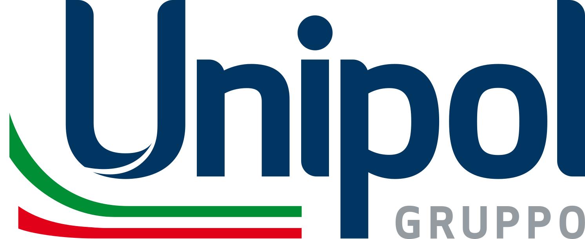

Rankings Financial data & insurance broking Unipol

Unipol
86
15070100
In the 70+ zone: a score above 70 with more than 20% upside to the median analyst target.
Biggest deductions
- MPS branches (M&A and dilution)−5
- Multiples vs own history and peers−5
- Bank exposure and derivatives−2
Strengths
- Capital+2
- Technical result+1
- Dividend+1
How the score is built
From 100 to 86, step by step: points off for the business, the price and the cracks, back for documented strengths, then three data adjustments.
Start
Score
Hover or select a step to see what drove it. Steps with findings open them below.
Key numbers
As of 1 Oct 2026. Analyst targets tend to be optimistic; read upside as a hint, not a forecast.
- Price
- 26.32 EUR
- Median analyst target
- 32.00 EUR
- Upside to median
- +21.6%
- Analysts
- 5
- Target range
- 29.00 – 33.50 EUR
- 52-week change
- +44%
- P/E (trailing)
- 11.2
- Forward P/E
- 12.1
- PEG
- n/a
Findings
Every deduction and every plus, with its source. Open a step to read them.
Business
Is the company getting stronger, not just bigger? · 1 finding−2 of −30
- −2Quality of growthNet income in H1 rose 42% to €1.06bn, but €211m pre-tax was an unrealised revaluation of SpaceX shares, and the banking arm (BPER) contributed €246m pre-tax; after tax and excluding SpaceX the increase was about 20%. Consensus expects only +7% EPS in 2026 and +4% in 2027.
Price
Today's multiples against the company's own history and its peers. · 1 finding−5 of −35
- −5Multiples vs own history and peersP/B 1.64 vs 0.35–1.38 in 2021–2025, trailing P/E 11.3 vs 3.4–10.1 and forward P/E 12.2 vs 4.8–10.8 (all records); dividend yield 4.1% vs 5.7–16%. Higher ROE (16.9% vs 7–15%) and the removal of the holding discount explain part of it, and vs Generali (forward P/E 13.0, P/B 1.87, ROE 15.1%) Unipol is not expensive. The re-rating has been taken.
Cracks
Cash flow, customers, debt, insiders, guidance and what sits behind the headline numbers. · 2 findings−7 of −35
- −5MPS branches (M&A and dilution)Unipol is buying 635 MPS branches for up to €3.5bn (about 18% of market cap) and has had a capital increase of up to €2.5bn approved, about 13% dilution at today's price; the cooperative shareholders will subscribe half. The deal depends on Intesa's contested bid for MPS (in-depth competition investigation, MPS' counterbid) and IVASS, and the bank must be merged with BPER. An insurer thus effectively becomes a bank group in the middle of a takeover battle.
- −2Bank exposure and derivativesUnipol owns 19.9% of BPER directly and a further 4.99% via total return equity swaps with 25–35 month maturities, which allow de facto control. An increasing share of earnings thus depends on an Italian bank's credit cycle, and the group must in future manage to both Solvency II and CET1.
Plus
Only documented strengths. · 3 findings+4 of +15
- +2CapitalThe group's solvency ratio rose to 259% (from 230% at year-end) and the insurance group's Solvency II ratio to 290%; the target after the MPS deal is over 200% for the group and over 280% for insurance.
- +1DividendThe dividend rose 32% to €1.12 (about €0.8bn) vs. net profit of €1.72bn TTM; for 2026 the company promises at least €930m, still clearly below net profit.
- +1Technical resultCombined ratio in P&C insurance of 91.8% in H1, in line with the strategic plan's target; premiums rose 3.9% to about EUR 9bn (P&C +3.6%, life +4.4%).
Caveats
What the score does not capture, or where the data is weak.
Insurance: FCF (€3.3bn) and P/FCF 5.8 are not meaningful because they include customer funds; the payout is measured against net income. The history before 2024 is distorted by the holding discount before the merger with UnipolSai, so the distance to its own multiples is somewhat exaggerated. Net income (€1.72bn TTM) includes a one-off gain on SpaceX shares (€211m in H1) and a share of profit from BPER. The MPS deal: Unipol buys 635 MPS branches, the MPS name and most of the head office (about €55bn in deposits, €42bn in loans) for up to €3.5bn, conditional on Intesa's exchange offer for MPS going through; the competition authority opened an in-depth investigation into Intesa's bid on 15 Sep. 2026, and MPS has responded with its own bids. The share price (+50% in 52 weeks) partly reflects the bank strategy. The price targets were last updated 12 June (5 analysts; Kepler €23.5 is below the share price) and are not a finding. The cooperative shareholders' shareholder agreement and their ownership stake have not been investigated; stockanalysis shows insiders 0.5% and free float 403 of 717m shares. Exposure to Italian government bonds has not been investigated.
Also in Financial data & insurance broking
The highest scores in the same industry.